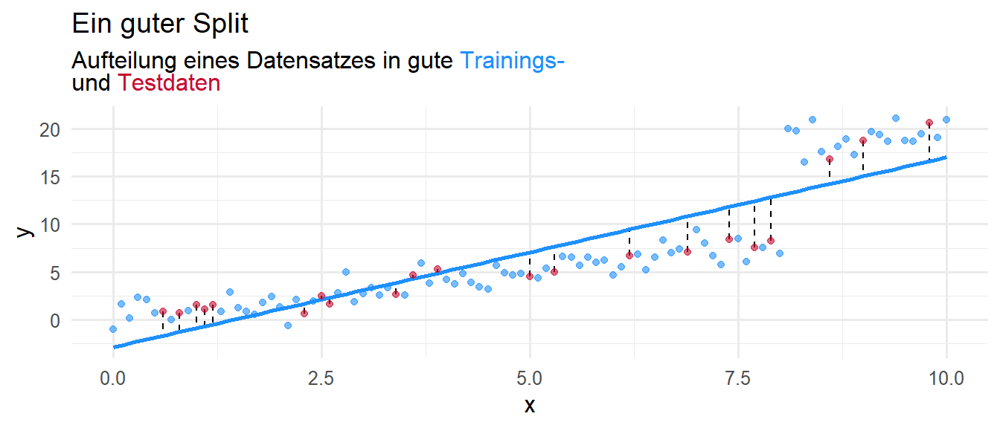

3 Weiterführende Konzepte des Dataminings
In diesem Kapitel werden wir uns mit weiterführenden Konzepten des Data Minings auseinandersetzen. Diese umfassen das Aufteilen der Daten in Trainings- und Testdaten, Cross-Validation (Kreuzvalidierung), die Imputation von fehlenden Werten sowie die Merkmalsselektion.
3.1 Training und Test Split
Die Parameter der linearen Regressionsmodelle aus Kapitel 2 haben wir unter Verwendung aller Daten geschätzt. Falls wir allerdings erwarten, dass neue Daten zu den Datensätzen hinzugefügt werden, ist das nicht die beste Idee, da wir nicht wissen wie gut unser Modell auf zuvor ungesehenen Daten funktioniert. Eine gängige Praxis ist deshalb die Daten in ein Trainings- und Test Set aufzuteilen. Mit den Trainingsdaten werden die Parameter des Modells geschätzt und mit den Testdaten wird die sogenannte Out-Of-Sample (OOS) Performance gemessen.
Beim Aufteilen der Daten sollte beachtet werden, dass das Verhältnis zwischen den beiden Teilen sinnvoll gewählt wird und die Aufteilungs zufällig gewählt wird.
Beispiel 3.1 In einem gegebenen Datensatz sind 101 Observationen \((x,y)\in\mathbb{R}\). Nun werden die letzten \(20\%\) diese Daten als Testdaten festgelegt und die ersten \(80\%\) der Daten als Trainingsdaten. Mit den Trainingsdaten schätzen wir die Parameter eins linearen Regressionsmodells und generieren Vorhersagen auf Basis der Testdaten. Wir können dann die Vorhersagegüte des Modells auf den Testdaten visuell evaluieren und uns ein
Im obigen Beispiel ist klar zu erkennen, dass der Split (also das Aufteilen der Daten) nicht optimal war. Zwar erzeugen die geschätzten Parameter gute vorhersagen auf den Trainingsdaten, allerdings sind die Vorhersagefehler in den Testdaten sehr hoch.
Wenn wir stattdessen die Daten in zufällige Trainings- und Testdaten aufteilen, ist für das gegebene Modell der In-Sample Fehler (IS-Fehler) zwar höher, allerdings der OOS-Fehler niedriger:

Im obigen Beispiel haben wir gesehen, dass ein zufälliger Split zu besseren Ergebnissen führen kann. Die Frage ist nun, wie wir in R einen zufälligen Split erzeugen können!
3.1.1 Training- und Testsplit in R
Die rsample::initial_split(), rsample::training() und rsample::testing() Funktionen erlauben ein einfaches und effizientes Aufteilen der Daten in Trainings- und Testdaten. Das {rsample} Paket ist teil des {tidymodels} Ökosystems, weshalb wir auch einfach mit dem Befehl library(tidymodels) dieses hinzufügen können. In Section 2.3.1 haben wir den penguins Datensatz verwendet, um die Parameter eines multiplen linearen Regressionsmodells zu schätzen. Des weiteren haben wir in Section 2.3.4.3 das MLR Modell auf dem gesamten Datensatz anhand der RMSE Metrik evaluiert. Hierbei hat sich ein RMSE Wert von 282 ergeben. Im Folgenden wollen wir das gleiche Modell erstellen, allerdings die Parameter nur mit den Trainingsdaten schätzen und die Performance dann auf den Testdaten evaluieren.
In der dritten Zeile wenden wir den set.seed() Befehl an. Diese Funktion ist wichtig um die Reproduzierbarkeit der Resultate zu gewährleisten, wenn zufällige Prozesse im Programmablauf involviert sind. Dadurch, dass wir im folgenden die Daten zufällig aufteilen, wird unter der Verwendung der set.seed() Funktion gewährleistet, dass bei jedem durchführen der darauffolgenden Zeilen, der gleiche zufällige Split durchgeführt wird.
In Zeile 5 verwenden wir die initial_split() Funktion, um die Daten aufzuteilen. Das Argument data = data_penguin beschreibt welche daten Aufgeteilt werden sollen und das Argument prop=0.8 steuert die Proportionalität des Splits. Der Wert prop = 0.8 teilt die Daten somit zufällig in \(80\%\) Trainings und \(20\%\) Testdaten ein.
In Zeile 6 und 7 verwenden wir dann die training() und testing() Funktionen um aus dem split_pinguin Objekt die Trainings- und Testdaten zu extrahieren. Die Trainings- und Testdaten sind daraufhin in einem Data-Frame bzw. Tibble gespeichert und können wie gewohnt verwendet werden.
Wir können nun die Parameter des MLR Modells schätzen wie wir es in #sec-MLRR getan haben:
Lediglich in Zeile 3 haben wir anstatt des data_penguin Datensatzes nun den data_train Datensatz verwendet. Da wir nur an der Modellgüte auf Basis der Testdaten interessiert sind, evaluieren wir an dieser Stelle nicht weiter das Modell auf Basis der Trainingsdaten.
Mit der augment() Funktion können wir nun wieder Vorhersagen und die dazugehörigen Residuen und mithilfe der rmse() Funktion den RMSE berechnen:
mlr_fit %>%
augment(data_test) %>%
rmse(truth = .pred, estimate = body_mass_g)# A tibble: 1 × 3
.metric .estimator .estimate
<chr> <chr> <dbl>
1 rmse standard 289.Der Test Fehler mit dem Wert 289 ist also nur knapp größer als der Fehler welchen wir in Section 2.3.4.3 beobachten konnten (282). Wir können deshalb also für zuvor ungesehene Pinguine erwarten, dass das Gewicht im Schnitt \(289\) g höher oder niedriger als der tatsächliche Wert geschätzt wird.
3.2 Cross-Validation
Das Konzpet der Cross-Validation (Kreuzvalidierung) knüpft direkt an das des Aufteilens der Trainings- und Testdaten an. Die Idee hierbei ist, dass wir die Daten nicht nur ein Mal in Trainings- und Testdaten aufteilen, sondern mehrmals auf verschiedene Art und weise. Die folgende Grafik illustriert die Idee der five-fold Cross-Validation:
In einem ersten Schritt, teilen wir die Daten in fünf gleichgroße, zufällige Teildatensätze (Folds) auf. Vereinigt ergeben diese Teildatensätze also wieder den gesamten Datensatz. Diese fünf Folds werden dann fünf mal dupliziert, so dass wir jeden Fold fünf Mal auffinden. Die einzelnen Duplikate werden hierbei Splits genannt. In jedem dieser 5 Splits wird dann ein anderer Fold als Testdaten definiert und die verbleibenden vier Folds als Trainingsdaten. Wir können dann vier verschiedene Trainings- und Testdatensätze verwenden um zum Beispiel die Parameter eines linearen Modells zu schätzen.

In Example 3.1 haben wir gesehen, dass ein unvorteilhafter Training- und Testsplit zu verzerrten Ergebnissen führen kann. Selbst bei einem zufällig ausgewählten Trainings- und Testsplit besteht das Risiko einen unvorteilhaften Split zu erstellen. Indem wir die Daten also systematisch aufteilen und den Testfehler mitteln, können wir das Risiko mitigieren. Wir können den Cross-Validation Test Fehler durch den Term
\[ \text{CV-Loss} = \frac{1}{5}\sum_{i=1}^{5} \text{Loss}_{\text{OOS}_i}(y,\hat{y}) \] berechnen. \(\text{Loss}_{\text{OOS}_i}\) steht hierbei für die OOS Performance in Split \(i\) bezüglich einer beliebigen Loss Funktion wie zum Beispiel RMSE.
Wir können die Anzahl der Splits bzw. Folds auch beliebig höher oder niedriger wählen. Falls wir zum Beispiel auf einen Datensatz mit \(n\) Ausprägungen \(n\)-Fold Cross-Validation anwenden, d.h. die Testsets aus einem Split entsprechen einem einzelnen Sample, dann spricht man auch von Leave-One-Out Cross-Validation. Dieses Prinzip garantiert zwar einen sehr robusten \(\text{CV-Loss}\), kann aber unter umständen auch zu sehr langen Berechnungszeiten führen, da wir schließlich für jeden Split ein Modell trainieren.
3.2.1 Cross-Validation in R
Die rsample::vfold_cv Funktion ermöglicht uns ein Cross-Validation Objekt zu erstellen. Dieses ist nichts anderes als ein verschachteltes Tibble bzw. Data Frame. D.h. jeder Eintrag ist wieder ein Tibble oder Data Frame selber.
folds_penguin <- vfold_cv(data = data_penguin, v = 5)Neben dem Argument data welches die Daten spezifiziert müssen wir noch die Anzahl der Folds übergeben. Diese können wir über das Argument v steuern. Falls wir also v=5 setzen, dann bedeutet das, dass wir 5-Fold Cross-Validation anwenden.
Wir können nun die Parameter eines MLR Modells für jeden Split schätzen und den CV-Loss berechnen:
- In der ersten Zeile verwenden wir das bereits spezifizierte MLR Modell
mlr_spec, um für dieses auf Basis jedes Spllits die Parameter zu schätzen. - In Zeile 2. verwenden wir statt der
fitFunktion diefit_resamplesFunktion. Wie der Name bereits vermuten lässt, können wir mit dieser Funktion die Parameter auf Basis der verschiedenen Splits berechnen. - Wir müssen deshalb in Zeile 3 statt dem Argument
datadas Argumentresamples = folds_penguinübergeben. - In der vierten Zeile spezifizieren wir dann mit dem
preprocessorArgument noch die Formel, bezüglich welcher die Parameter geschätzt werden sollen. Äquivalent dazu wird in derfitFunktion das Argumentformulaverwendet. Hintergrund für die unterschiedlichen Argumentnamen ist, dass wir diefit_resamplesFunktion noch viel umfangreicher nutzen könnten, das aber den Rahmen dieser Vorlesung sprengt (siehe bei Interesse Machine Learning Übungsskrip).
Um nun die Performance der Cross-Validation zu überprüfen, können wir die tune::collect_metrics Funktion verwenden:
mlr_fit_cv %>% collect_metrics()Der Rückgabewert der collect_metrics Funktion ist ein Tibble, welches verschiedene Informationen der Evaluation des CV-Objekts enthält:
| .metric | .estimator | mean | n | std_err | .config |
|---|---|---|---|---|---|
| rmse | standard | 287.4591766 | 5 | 9.545448579 | Preprocessor1_Model1 |
| rsq | standard | 0.8732929 | 5 | 0.006853351 | Preprocessor1_Model1 |
Da wir keine weiteren Metriken spezifiziert haben, werden automatisch der RMSE, sowie \(R^2_\text{adj}\) berechnet. Die Namen der Metriken sind in der Spalte .metric gespeichert. In der Spalte mean können wir den CV-Loss einsehen. Die Spalte n gibt die Anzahl der Folds an und std_error den entsprechenden Standardfehler der Metrik auf Basis der Folds. Die .config Spalte ist für diesen Kurs ebenso nicht relevant.